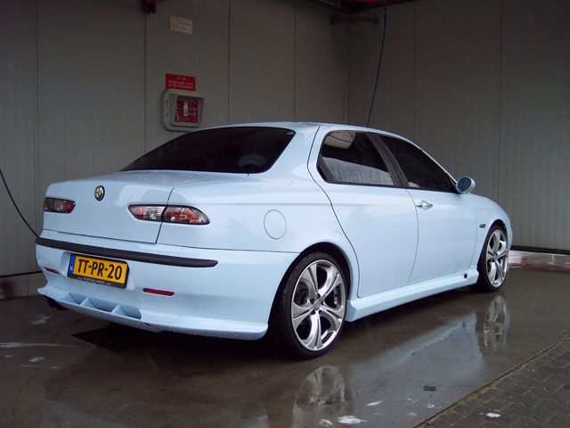
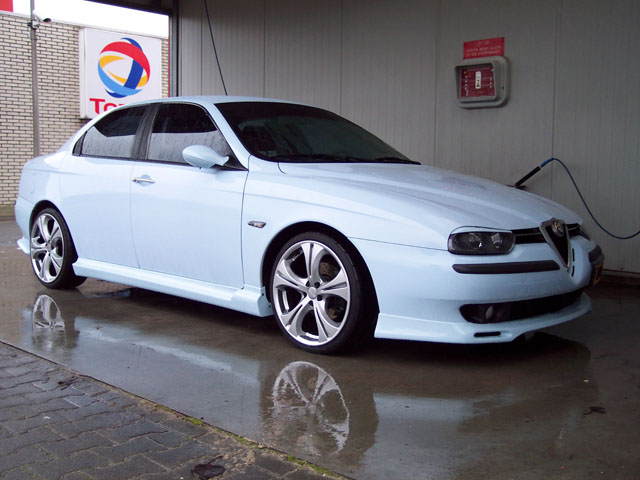
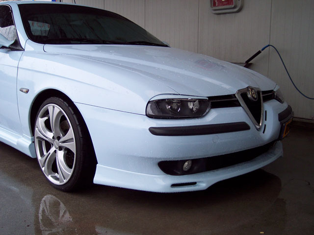
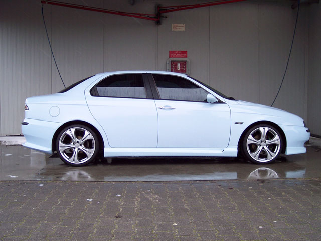

rear bumperspoiler from Zender, tinted the windows, placed a new exhaustpipe, mounted GTA-headlights, headlight-spoilers, etc.
156 2.0ts from 1998.
Its a babyblue (Azzuro Achilles/405) one with 18'' Elite-rims with 215/35-18 tyres.
It has a modified air-intake and exhaust from Madeno-tuning
(www.madeno.nl), black leather interior with heated frontseats, 30mm
lowered suspension and climatronic/airco, elektrical windows back and
front.
Erik Bremmer - Netherlands
submitted: 2005



![[Prev]](bw_prev.gif)
![[Index]](bw_index.gif)
![[Next]](bw_next.gif)